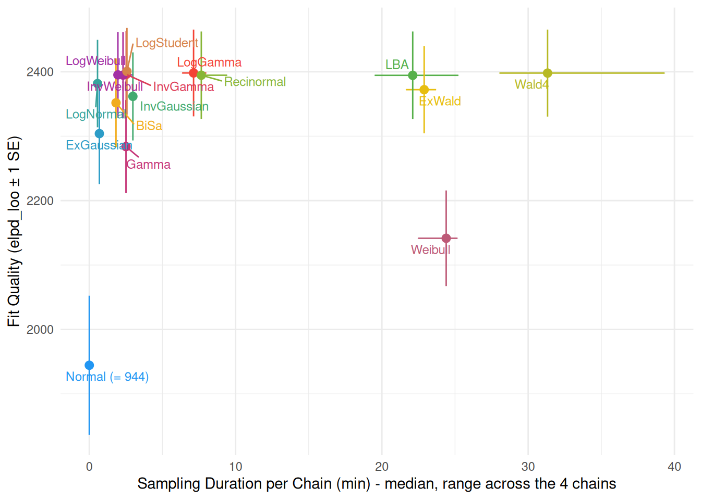
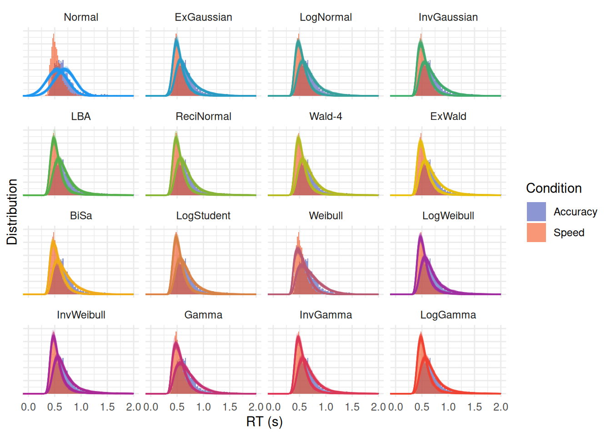
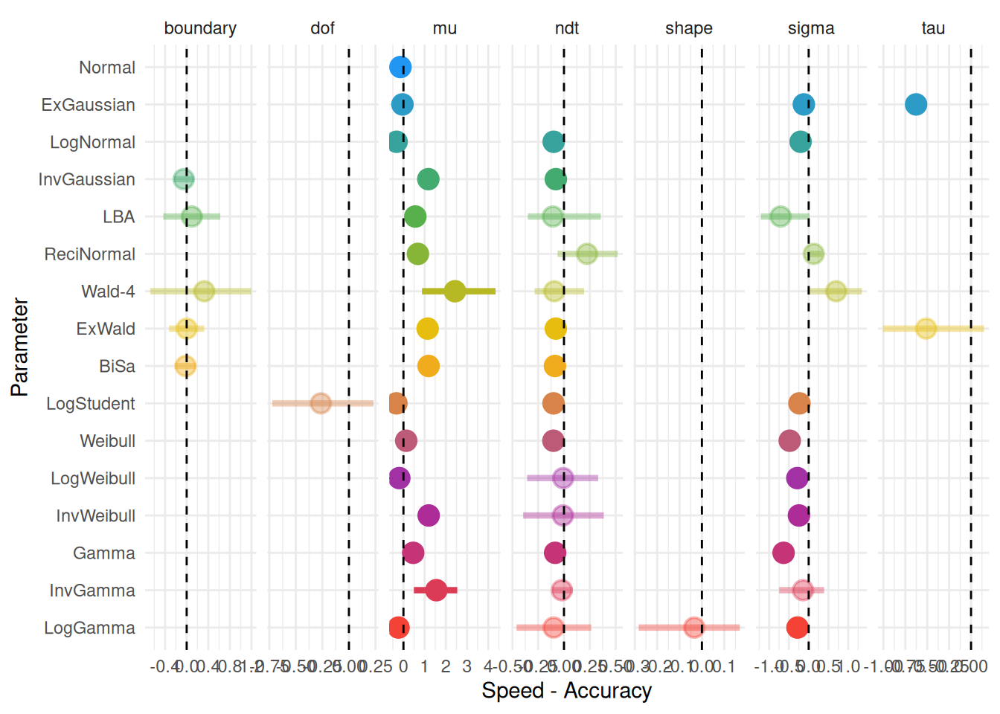

Why Linear Models are bad for RTs
After months of effort designing the study, recruiting participants and collecting data, you finally get your hands on that dataset and decide to check whether your super duper Nobel-prize-worthy experimental condition has an effect on reaction times. You do what everybody does, and what has always been done: fit a (mixed) linear model.
The data are bundled with cogmod as badlm - 20 participants, 25 trials in each of two conditions. See ?badlm (or data-raw/badlm.R) for how they were generated.
library(lme4)
model <- lmer(RT ~ Condition + (1 | Participant), data = sim)
parameters(model)
#> # Fixed Effects
#>
#> Parameter | Coefficient | SE | 95% CI | t(996) | p
#> --------------------------------------------------------------------
#> (Intercept) | 0.69 | 0.01 | [ 0.67, 0.72] | 59.34 | < .001
#> Condition [B] | -1.20e-03 | 0.01 | [-0.03, 0.03] | -0.08 | 0.936
#>
#> # Random Effects
#>
#> Parameter | Coefficient
#> -----------------------------------------
#> SD (Intercept: Participant) | 0.02
#> SD (Residual) | 0.24Nothing. NOTHING 😭
The effect of Condition B vs. Condition A is minuscule and and non-significant. Months of work, and the only conclusion you can write down is “the condition had no effect on response times”. As you contemplate the ruins of your Nobel-prize aspirations, you start seriously considering abandoning your dreams of a career in academia and retraining as a goat farmer.
But then, as a last sanity check, you decide to actually look at the data.
ggplot(sim, aes(x = RT, fill = Condition)) +
geom_histogram(bins = 120, alpha = 0.8, position = "identity") +
scale_fill_manual(values = c("orange", "blue")) +
theme_minimal()
Shock and horror!
The two distributions could hardly look more different! Condition A has responses starting almost immediately (some as fast as 150 ms) and a long tail stretching past 2 seconds. Condition B has no responses at all before ~600 ms, and then a tight, narrow bump. One condition looks like fast, variable, possibly impulsive responding; the other looks like a slow but highly consistent process with a long “dead time” before any response can be emitted. These are, by any reasonable standard, two dramatically different behaviours.
How come the test did not capture any of it? Because we simulated these two distributions to have exactly the same mean - and the mean is the only thing the linear model was ever looking at. Everything that distinguishes these conditions - where the distribution starts, how wide it is, how heavy its tail is - was invisible to it by construction.
The lesson is not that the linear model lied: it faithfully answered the question it was asked. The problem is that “is the mean RT different?” is almost never the question we actually care about. Fortunately, better models exist - models that describe the shape of the RT distribution with parameters that can be mapped onto meaningful cognitive quantities. The rest of this vignette is about them.
“But I read that I can transform my data to make it more normal, should I do it?”
Log-transforming (or inverse-transforming, or Box-Cox-ing) RTs is a very common attempt at rescuing the linear model: make the data look Gaussian, then proceed as usual. It is, however, not a good idea (Schramm & Rouder, 2019). Transformations do not merely “fix” the distribution, they silently change the quantity being tested: the model no longer compares mean RTs but means of transformed RTs, which do not back-transform to anything you meant to ask about, and which can reverse, create or hide effects relative to the untransformed scale. Worse, they do nothing about the underlying problem illustrated above - a difference in shift, in spread or in tail weight is still squeezed into a single location parameter.
What one should do instead is use a model that is appropriate for the shape of the data and - ideally - for its data generating process. That distinction matters if you want to push the boundaries of what we can learn from your data. Some of the families below (ExGaussian, Weibull, Gamma…) are essentially descriptive: they are flexible enough to fit the shape of RT distributions well, but their parameters have no guaranteed correspondence to cognitive mechanisms. Others (Wald / Wiener, LBA, DDM) are generative: they are derived from an explicit account of how a decision unfolds over time - evidence accumulating towards a threshold - so their parameters (drift rate, boundary separation, non-decision time) are meant to refer to actual components of the process. Both are large improvements over the Gaussian, but the latter allows for potentially stronger and more interpretable claims.
Useful references to start:
- Lindelov’s overview of RT models: An absolute must-read.
- De Boeck & Jeon (2019): A paper providing an overview of RT models.
The Data
For this chapter, we will be using the data from Wagenmakers et al., (2008) - Experiment 1 also reanalyzed by Heathcote & Love (2012), that contains responses and response times for several participants in two conditions (where instructions emphasized either speed or accuracy). The data are distributed in the rtdists package as speed_acc. We excluded trials with extreme slow responses (>2 sec).
set.seed(123) # For reproducibility
# Experiment 1 of Wagenmakers et al. (2008), from rtdists.
data(speed_acc, package = "rtdists")
df <- data.frame(
Participant = as.integer(as.character(speed_acc$id)),
Condition = unname(c(accuracy = "Accuracy", speed = "Speed")[
as.character(speed_acc$condition)]),
RT = speed_acc$rt,
Error = as.integer(as.character(speed_acc$response) != as.character(speed_acc$stim_cat)),
Frequency = unname(c(high = "High", low = "Low", very_low = "Very Low")[
sub("^nw_", "", as.character(speed_acc$frequency))])
)
df <- df[df$Participant %in% c(1, 2, 3) &
df$Error == 0 &
df$RT <= 2, ]
# Show 10 first rows
head(df, 10)
#> Participant Condition RT Error Frequency
#> 1 1 Speed 0.700 0 Low
#> 3 1 Speed 0.460 0 Very Low
#> 4 1 Speed 0.455 0 Very Low
#> 6 1 Speed 0.773 0 High
#> 7 1 Speed 0.390 0 High
#> 9 1 Speed 0.603 0 Low
#> 10 1 Speed 0.435 0 High
#> 11 1 Speed 0.524 0 Very Low
#> 12 1 Speed 0.427 0 High
#> 13 1 Speed 0.456 0 Very LowWe are going to first take interest in the response times (RT) of Correct answers only (as we can assume that errors are underpinned by a different generative process).
ggplot(df, aes(x = RT, fill = Condition)) +
geom_histogram(bins = 120, alpha = 0.8, position = "identity") +
scale_fill_manual(values = c("Accuracy"="#3F51B5", "Speed"="#F4511E")) +
theme_minimal()
Main Models
Normal (Gaussian)
It is worth stressing that basic linear models, often adopted as “default” models (as they are the one obtained by simply running lm(), t.test() or brm() without specifying a family), are not a neutral or assumption-free description of the data. It is a model that assumes RTs are drawn from a Normal distribution whose mean mu depends on the predictors. The parameter that we then interpret and report as “the effect” of a condition is a difference between the means of two Normal distributions.
This comes with a set of assumptions that are rarely plausible for RT data. First, the variance between various conditions is assumed to be fixed (sigma is fixed as a constant across conditions and participants), so any experimental effect can only manifest as a shift in the mean - even though speed instructions, task difficulty or fatigue typically change the spread and the shape of the RT distribution as much as its center. Second, the Normal distribution is symmetric and has support over the whole real line, whereas RTs are strictly positive, bounded below by a non-decision time, and markedly right-skewed. The model therefore assigns non-zero probability to negative response times, and systematically misrepresents and underestimates the long right tail.
Beyond these statistical concerns, the deeper issue is conceptual: the mean of a Normal distribution is not a quantity that maps onto anything the cognitive system does. Slow trials, fast guesses and typical responses are all absorbed into a single average, so a change in the mean is ambiguous as to its origin - it could reflect a genuine slowing of processing, a handful of attentional lapses in the tail, or a change in response caution. The distributional models presented below are attempts to carve the RT distribution into parameters that are, at least in principle, more closely tied to distinct underlying processes.
f <- bf(RT ~ Condition)
m_normal <- brm(f,
data = df,
chains = 4, iter = 500, backend = "cmdstanr"
)
m_normal <- brms::add_criterion(m_normal, "loo")The animation below unpacks what such a model actually contains: the two parameters travelling through the space of possible Normal distributions, and the prior placed on each of them. Both use an identity link, i.e. they are sampled directly on their natural scale - which for sigma is only possible because it is declared with a lower bound of 0 and given a truncated prior (the half Student-t that brms uses by default for scale parameters).

ExGaussian
Rather than relying on default model families, such as Gaussian models, one can select models that accurately represent the distribution of their outcome variable. For instance, models based on Exponentially modified Gaussian (ex-Gaussian) distributions, which are suited to their typical skewed shape (Balota & Yap, 2011; Matzke & Wagenmakers, 2009).
This distribution is a convolution of normal and exponential distributions and has three parameters, namely (mu) and (sigma) - the mean and standard deviation of the Gaussian distribution - and (tau) - the exponential component of the distribution. Intuitively, these arguments reflect the centrality, the width and the tail dominance, respectively.
Beyond the descriptive value of these types of models, some have tried to interpret their parameters in terms of cognitive mechanisms, arguing for instance that changes in the Gaussian components reflect changes in attentional processes (e.g., “the time required for organization and execution of the motor response”; Hohle, 1965), whereas changes in the exponential component reflect changes in intentional (i.e., decision-related) processes (Kieffaber et al., 2006). However, Matzke & Wagenmakers (2009) demonstrate that there is no direct correspondence between ex-Gaussian parameters and cognitive mechanisms, and underline their value primarily as descriptive tools, rather than models of cognition per se.
Descriptively, the three parameters can be interpreted as:
- Mu : The location / centrality of the RTs. Would correspond to the mean in a symmetrical distribution.
- Sigma : The variability and dispersion of the RTs. Akin to the standard deviation in normal distributions.
- Tau : Tail weight / skewness of the distribution.
Despite the generally good fit and relative simplicity of Ex-Gaussian models, they have one major drawback. Their underlying parameters do not represent independent characteristics of the overall shape. The shape of the distribution is detemrined by the interaction of all three parameters. Below is an example of ex-Gaussian distributions that all share the same location and dispersion parameters, and differ only in their tail weight.

Although only the tail weight parameter is changed, the whole distribution appears to shift its centre of mass: as goes from 0 to 0.5, the peak moves from 0.70 to 0.93 and the mean from 0.70 to 1.20 s, while the SD of the whole distribution grows from 0.20 to 0.54. Hence, one should be careful not to interpret the value of mu directly as the “mean” or the distribution “peak”, nor sigma as the SD or the “width”.
One important caveat: brms’s native exgaussian() family does not use this “classical” parameterization familiar to experimental psychologists: its mu indexes the mean of the entire distribution (i.e., Gaussian + exponential combined) rather than the location of the Gaussian component alone. This matters because a change in the Gaussian location and an opposite change in the exponential tail can cancel out at the level of the overall mean, so effects estimated on brms’s default mu can lead to different (and potentially incorrect) inferences about the underlying process than effects estimated on the classical mu.
For this reason, cogmod provides its own cogmod_exgaussian() custom family, in which mu and sigma are the mean and SD of the Gaussian component and tau is the mean of the exponential tail - directly matching the classical parameterization.
Note that cogmod also implements the Generalised Ex-Gaussian (Marmolejo-Ramos et al., 2023), cogmod_geg(), which adds a shape parameter that raises the ex-Gaussian’s CDF to a power. It reaches distributions the ex-Gaussian cannot - including negatively skewed ones - and shape = 1 recovers cogmod_exgaussian() exactly, so the two can be compared with loo_compare(). The cost is parameter interpretability: with shape free the mean is no longer mu + tau, and shape is strongly confounded with mu. See ?cogmod_geg for the details.
f <- bf(
RT ~ Condition,
sigma ~ Condition,
tau ~ Condition,
family = cogmod_exgaussian()
)
m_exgauss <- brm(f,
data = df,
prior = cogmod_priors(f, df),
init = cogmod_inits(f, df),
stanvars = cogmod_stanvars(f),
chains = 4, iter = 500, backend = "cmdstanr"
)
m_exgauss <- brms::add_criterion(m_exgauss, "loo")Note that every model below is fitted with init = cogmod_inits(f, df). brms initialises on the unconstrained scale, so the usual init = 0 starts ndt at exp(0) = 1 second - above most sub-second reaction times, which leaves every response attributed to the outlier component and the decision parameters with no gradient to move on. For cogmod_gamma() and cogmod_weibull() that is fatal (the chain never moves at all); for the others it merely wastes warmup walking ndt back down, which on a 1500-trial LogNormal cost about 3x the sampling time. cogmod_inits() sets each parameter separately and leaves everything it does not recognise to Stan. See ?cogmod_inits.
Shifted LogNormal
The LogNormal distribution assumes that it is the logarithm of the RTs, rather than the RTs themselves, that is Normally distributed. This is an attractive assumption for response times: it constrains the variable to be strictly positive, and it produces the right-skewed shape typical of RT data for free.
What is the rationale for LogNormal models?
The reason why the Normal distribution is so ubiquitous in nature - and hence used as a relatively good default model - is the Central Limit Theorem, which states that the sum of a large number of independent random variables tends (under fairly general conditions) towards a Normal distribution. Because many things in nature are the result of the addition of many random processes, the Normal distribution is very common in real life.
However, it turns out that the multiplication of random variables results in a LogNormal distribution. The reason is in fact the same theorem: since the logarithm of a product is the sum of the logarithms, a multiplicative cascade becomes an additive one on the log scale, and the Central Limit Theorem applies there instead. And multiplicative (rather than additive) cascades of processes are also very common in nature, from the lengths of latent periods of infectious diseases to the distribution of mineral resources in the Earth’s crust, and the elementary mechanisms at stake in physics and cell biology (Limpert et al., 2001).
Thus, using LogNormal distributions for RTs can be justified with the assumption that response times are the result of multiplicative stochastic processes happening in the brain - each stage of processing scaling, rather than adding to, the duration of the previous ones. Note that this is a plausibility argument rather than a demonstrated mechanism: it makes the LogNormal a well-motivated default, but it does not turn mu and sigma into cognitive parameters.
Similarly to most implementations, cogmod_lognormal() parametrizes mu and sigma as the mean and SD of the distribution on the log scale (so that the median of the distribution is ndt + exp(mu)). The shifted version adds a third ingredient: a non-decision time (ndt) before which no response can physically occur, corresponding to the time taken by stimulus encoding and motor execution. Without it, the distribution is forced to start at zero, and the model has to distort the shape of the whole distribution to accommodate the empty space between 0 and the first responses. ndt is estimated directly, in seconds, rather than as a proportion of the fastest observed response - which is only possible because the density is mixed with a small outlier component (poutlier) that keeps it positive below ndt instead of assigning it exactly zero density. See vignette("outliers") for why that mixture is necessary and how its priors are set.
Less purely descriptive than the ExGaussian, this model has some theoretical grounding, conceptualizing responses as the output of multiplicative random processes. However, despite capturing the shape of RT distributions very well, its two parameters mu and sigma are not, in themselves, cognitive quantities. It does, however, sit at the base of a proper process model - the Lognormal Race (see cogmod_lnr()), in which several LogNormal accumulators compete and the fastest one determines both the response and the RT.
“Isn’t this the same as log-transforming my RTs?”
It is not, and the difference is precisely the one discussed above. Log-transforming the data and running a linear model on log(RT) estimates the mean of the transformed values, which then has to be interpreted on the log scale (or back-transformed into something that is no longer the mean RT). The LogNormal model leaves the data untouched and instead changes the likelihood: the RTs stay in seconds, and it is the model that is told they arise from a LogNormal process. In addition, the shift (tau) and the dispersion (sigma) are estimated as their own parameters, and can be given their own predictors - something a transformation can never give you, since it still funnels every effect through a single location parameter.
The family also has a sigmabias parameter, a start-point range that turns it into the single-accumulator LBA with a LogNormal drift rate (see the LBA below, and ?cogmod_lognormal). It is fixed at zero here, which is the shifted LogNormal proper: on RT-only data a start-point range is identified through the shape of the distribution alone and adds a flat direction to the likelihood at zero, so it is worth estimating only with a specific hypothesis about start-point variability.
f <- bf(
RT ~ Condition,
sigma ~ Condition,
sigmabias = 0,
ndt ~ Condition,
family = cogmod_lognormal()
)
m_lognormal <- brm(
f,
data = df,
prior = cogmod_priors(f, df),
init = cogmod_inits(f, df),
stanvars = cogmod_stanvars(f),
chains = 4, iter = 500, backend = "cmdstanr"
)
m_lognormal <- brms::add_criterion(m_lognormal, "loo")Inverse Gaussian (Shifted Wald)
This is where we cross an important line. The families discussed so far are popular because their shape resembles that of RT distributions; the Wald distribution, in contrast, is derived from a model of the process that (potentially) generates the data. It considers responses as the end of a noisy evidence accumulating process that accumulates over time until it reaches a decision threshold: the distribution of the times at which that threshold is first crossed is the Wald distribution. Its skewed shape is not a modelling choice, it is a consequence of the assumed mechanism.
Parameters
driftdriftzero drift rate
driftone second rate
sigmasigmazero rate SD
sigmaone second SD
boundary decision threshold threshold offset
bias start point
sigmabias start-point range
ndt non-decision time
Assumptions
boundaries
accumulators
within-trial variability
The Shifted Wald model (also known as the Inverse Gaussian distribution) is actually equivalent to a one-response version of the Drift Diffusion Model (DDM) with no between-trial variability in drift rate (which is what sigmadrift = 0 does), starting point, or non-decision time (sigmandt = 0). This changes what the parameters mean. Instead of a location and a width (e.g., Mean and SD of the RT distribution), we now estimate quantities that refer to distinct components of the decision: mu is the drift rate (the speed at which evidence accumulates, often read as task difficulty or processing efficiency), boundary is the decision threshold (how much evidence is required before responding, i.e., response caution), and ndt is again the non-decision time (encoding and motor execution). This is why the formula below regresses Condition on boundary rather than on sigma: the natural hypothesis for a speed-vs-accuracy manipulation is that instructions move the threshold, not the quality of the evidence.
Two caveats are worth keeping in mind. First, because this version has a single boundary, it only describes the timing of one type of response - it knows nothing about errors, and so cannot exploit the joint distribution of choices and RTs (that is what the DDM and LBA of the Decision Making vignette are for). Second, this interpretive gain is not free: with RT data alone, drift rate and boundary separation trade off against each other to a considerable degree, so their separate estimates should be treated with more caution than their cognitive labels suggest. This issue is even more critical when the additional variability parameters (sigmadrift and sigmandt) are estimated, but see below for details about that.
f <- bf(
RT ~ Condition,
boundary ~ Condition,
ndt ~ Condition,
sigmadrift = 0, # Fixed at zero, not estimated
sigmandt = 0, # Fixed at zero, not estimated
family = cogmod_invgaussian()
)
m_wald <- brm(
f,
data = df,
prior = cogmod_priors(f, df),
init = cogmod_inits(f, df),
stanvars = cogmod_stanvars(f),
chains = 4, iter = 500, backend = "cmdstanr"
)
m_wald <- brms::add_criterion(m_wald, "loo")
Linear Ballistic Accumulator
The LBA is normally a race: one accumulator per response option, each rising linearly and ballistically - no within-trial noise - from a start point drawn uniformly on [0, A] at a drift rate drawn from a normal, until one of them reaches the threshold b. The first to arrive determines both the response and the RT. With no choice to model there is nothing to race, so what is used here is the single-accumulator version: the RT is simply that one accumulator’s finishing time, (b - start) / drift, plus non-decision time. All of the RT variability therefore comes from across-trial variability in the start point (sigmabias, the A above) and in the drift rate, rather than from moment-to-moment noise within the trial.
sigma is fixed to 1 rather than estimated because the evidence scale is arbitrary: nothing observable is measured in “units of evidence”. Multiplying the drift rate, its standard deviation sigma, the start-point range A and the threshold b all by the same constant leaves the decision time (b - start) / drift completely unchanged, since numerator and denominator scale together. Only ratios of these parameters are identified, so exactly one of them has to be pinned down to fix the scale, and by convention that is the drift standard deviation. The remaining parameters are then read in units of the across-trial drift SD. Any one of the four would do equally well; sigma is chosen because it is the least interesting of them. Note that this is what sigma = 1 in the formula below does - it fixes the parameter as a constant. Drop it and brms will happily estimate it instead, leaving the model unidentified and the sampler free to wander along that ridge.
Fixing the evidence scale is not quite the end of the identification story. As the start-point range sigmabias shrinks toward zero the LBA converges to the recinormal - the LATER model, in which 1 / (RT - ndt) is normally distributed - and it does so smoothly, which means the likelihood becomes flat in sigmabias once the range is small enough. On a softplus link zero sits at minus infinity, so a flat prior over a flat likelihood is an improper posterior. cogmod_priors() supplies weak normal(0, 1) priors on sigmabias and boundary for exactly this reason - the threshold is b = sigmabias + boundary, so the two share the ridge - which brings that same fit to Rhat 1.02, an effective sample size of 387, and a sensible finite estimate. This is the same argument as for ndt and poutlier in vignette("outliers"): pass prior = cogmod_priors(f, df).
f <- bf(
RT ~ Condition,
sigmabias ~ Condition,
boundary ~ Condition,
ndt ~ Condition,
sigma = 1,
family = cogmod_lba1()
)
m_lba <- brm(
f,
data = df,
prior = cogmod_priors(f, df),
init = cogmod_inits(f, df),
stanvars = cogmod_stanvars(f),
chains = 4, iter = 500, backend = "cmdstanr"
)
m_lba <- brms::add_criterion(m_lba, "loo")Other Models
Note that the families presented below have not been used nearly as often in the RT literature as the ones above, and their properties in this context are correspondingly less well documented. They are nonetheless capable of generating close fits to RT data, and more research is needed to establish whether they offer any real advantage - in terms of fit, of interpretability, or of computational behaviour - over the more established options.
Recinormal (LATER)
The recinormal (reciprocal-of-normal) distribution is at the basis of the LATER model - Linear Approach To Threshold with Ergodic Rate: if the rate of linear accumulation varies normally from trial to trial, then 1 / RT is normally distributed, so RT itself is recinormal. This idea is in fact older than most sequential-sampling models. Carpenter proposed it in 1981, then formalized it with Williams in 1995, after noticing that the usual skewed RT histogram never matched any standard statistical distribution, and reasoning that since RT is the outcome of a rate process - a signal rising to threshold, like a reaction reaching completion - it made more sense to model the variability in that underlying rate than to keep fitting shapes to its result. Switching the analysis from RT to 1 / RT and finding a clean Gaussian was the payoff of that reframing.
In the terms of the previous section, this is exactly where the LBA was heading: set the start-point range sigmabias to zero and the accumulator starts from the same place on every trial, so the only thing left varying is the rate of rise. The decision time is then simply b / rate, and a normally distributed rate makes 1 / (RT - ndt) normally distributed in turn. (The - ndt is the one refinement on the classical statement above: any time spent on encoding and motor execution is not part of the rate process, so it has to come off before the reciprocal is taken.)
What makes LATER attractive is that its two parameters are directly interpretable, and interpretable as something you can see, often called promptness - how quickly the response comes, rather than how long it takes - and mu and sigma are simply its mean and standard deviation. This is what a reciprobit plot displays: promptness on a probit axis, on which a LATER model is a straight line, mu sets its position and sigma its slope. Carpenter’s central claim is read off exactly that plot - manipulating the prior probability of a stimulus shifts the line sideways (a change in mu, the rate of rise), while manipulating urgency swivels it about its intercept (a change in the threshold).
Going the other way is instructive too. LATER lets the rate vary from trial to trial but treats the level the signal starts from as fixed; letting that vary as well gives the extended LATER (E-LATER) model of Nakahara et al. (2006) - which is to say that the LBA’s sigmabias is not an LBA-specific device but the same extension the oculomotor literature arrived at independently, the two differing mainly in the distribution assumed for the starting level.
There is no separate family for this: LATER is cogmod_lba1() with sigmabias fixed at zero. Two parameters have to be fixed rather than one. As the evidence scale is arbitrary in the sense described above - multiplying mu, sigma, sigmabias and boundary by any common constant leaves the likelihood unchanged - so one of them has to be fixed to break that. Compared to the 1-accumulator LBA, for LATER the natural choice is boundary = 1, which leaves mu and sigma reading directly as the mean and SD of promptness.
f <- bf(
RT ~ Condition,
sigma ~ Condition,
ndt ~ Condition,
sigmabias = 0, # no start-point variability: this is what makes it LATER
boundary = 1, # absorbs the threshold, so mu and sigma are promptness
family = cogmod_lba1()
)
m_recinormal <- brm(
f,
data = df,
prior = cogmod_priors(f, df),
init = cogmod_inits(f, df),
stanvars = cogmod_stanvars(f),
chains = 4, iter = 500, backend = "cmdstanr"
)
m_recinormal <- brms::add_criterion(m_recinormal, "loo")Wald-4
This mode corresponds to the Shifted Wald model with an extra parameter corresponding to the variability of the drift rate. That extra parameter makes it a hybrid of the Wald and LATER models: it is the only one here carrying both sources of randomness. The Wald has moment-to-moment noise within the trial and a drift rate that is the same on every trial; LATER has no within-trial noise at all and puts all of the variability into a drift rate that is redrawn each trial; Wald-4 has both at once, and each is nested inside it. Set sigmadrift = 0 and the across-trial variability disappears, leaving the plain Wald exactly. Push the other way - letting the accumulated evidence grow large relative to the diffusion noise, which here means scaling mu, boundary and sigmadrift up together - and the within-trial noise becomes negligible, leaving the recinormal of the previous section. That second limit is approached rather than reached (the relative error falls off as the square of the scaling factor), so it is not something you fix in the formula, but it is worth knowing it is there: it means that large values of all three parameters describe very nearly the same distribution as small ones, which is a ridge, and part of why cogmod_priors() puts a prior on sigmadrift.
The family has one more variability parameter, sigmandt, which spreads the non-decision time uniformly over [ndt, ndt + sigmandt] - the single-boundary counterpart of the DDM’s st0. It is typically fixed at zero because its effect can be confounded with that of other parameters (the leading edge of the distibution is also affected by ndt and poutlier). It is hard to estimate, and should only be freed (e.g., sigmandt ~ 1) with a lot of data and/or a strong prior (see ?rcogmod_invgaussian).
f <- bf(
RT ~ Condition,
boundary ~ Condition,
ndt ~ Condition,
sigmadrift ~ Condition,
sigmandt = 0,
family = cogmod_invgaussian()
)
m_wald4 <- brm(
f,
data = df,
prior = cogmod_priors(f, df),
init = cogmod_inits(f, df),
stanvars = cogmod_stanvars(f),
chains = 4, iter = 500, backend = "cmdstanr"
)
m_wald4 <- brms::add_criterion(m_wald4, "loo")ExWald
f <- bf(
RT ~ Condition,
boundary ~ Condition,
ndt ~ Condition,
tau ~ Condition,
family = cogmod_exwald()
)
m_exwald <- brm(
f,
data = df,
prior = cogmod_priors(f, df),
init = cogmod_inits(f, df),
stanvars = cogmod_stanvars(f),
chains = 4, iter = 500, backend = "cmdstanr"
)
m_exwald <- brms::add_criterion(m_exwald, "loo")Censored Shifted Wald
Every model so far was fitted to the correct responses alone, on the argument that errors come from a different generative process. Dropping them is not free, though: it conditions on the correct process having won, which truncates its slow tail - the trials on which a slow correct response was coming are exactly the trials on which an error got in first. The simple censored shifted Wald (Miller et al., 2018, their Eq. 4) keeps those trials without modelling the error process at all. An error at time t is taken to provide further information to the correct accumulator: it had not finished by t. It therefore enters the likelihood as a right-censored observation, contributing the Wald’s survival P(T > t) where a correct response contributes its density. This is the standard survival-analysis treatment of a competing event, and brms already has the syntax for it, cens().
# The same data, this time keeping the errors. `Error` becomes the censoring
# indicator: Error == 1 says the RT is a lower bound on the correct process's time.
df_cens <- data.frame(
Participant = as.integer(as.character(speed_acc$id)),
Condition = unname(c(accuracy = "Accuracy", speed = "Speed")[
as.character(speed_acc$condition)]),
RT = speed_acc$rt,
Error = as.integer(as.character(speed_acc$response) != as.character(speed_acc$stim_cat))
)
df_cens <- df_cens[df_cens$Participant %in% c(1, 2, 3) & df_cens$RT <= 2, ]
f <- bf(
RT | cens(Error) ~ Condition,
boundary ~ Condition,
ndt ~ Condition,
sigmadrift = 0,
sigmandt = 0,
family = cogmod_invgaussian()
)
m_cswald <- brm(
f,
data = df_cens,
prior = cogmod_priors(f, df_cens),
init = cogmod_inits(f, df_cens),
stanvars = cogmod_stanvars(f),
chains = 4, iter = 500, backend = "cmdstanr"
)The same cens() works on every family of this vignette that has a closed-form CDF - the LogNormal, the ex-Gaussian, the Gamma and Weibull variants - so each has a censored version one addition term away, and log_lik() (hence loo()) scores the censored trials the same way the sampler did. Two things are worth knowing before reaching for it.
What it assumes. Censoring says the error tells you nothing about the correct process beyond “not yet”. That is what buys the model its stability when errors are few - there is no error accumulator to estimate (see the Decision Making vignette). It holds when the error comes from a process independent of the correct one, which in practice and is unlikely when a high number of errors is present (> 5%). In these cases, fully modelling the error process is usually preferred.
The check to run first. Censoring draws the errors from the surviving tail, so it can only ever predict them slower than correct responses. So compare the two before fitting:
aggregate(RT ~ Condition + Error, data = df_cens, FUN = median)
#> Condition Error RT
#> 1 Accuracy 0 0.635
#> 2 Speed 0 0.518
#> 3 Accuracy 1 0.629
#> 4 Speed 1 0.503On these data the errors have the same median as the correct responses in both conditions, and equal speed is the signature of a single diffusion process, and the errors here are 5% (accuracy) and 10% (speed) of the trials, which suggests this model is not appropriate for this data set. The fit above is shown for its syntax only; but Decision Making models are the best tool for this data, and even more so if the errors are faster than the correct responses, the signature of a low boundary or a biased start point. Where errors are clearly slower, or where there is no error response at all - go/no-go, deadlines, omissions - a non-response genuinely is a right-censored draw from one accumulator and censoring is the exact model rather than an approximation. ?rcogmod_invgaussian has Miller et al.’s demonstration: a Wald with a virtual deadline, where dropping the timed-out trials or keeping the deadline as if it were an RT biases every parameter and censoring recovers them.
One more consequence: posterior_predict() predicts the latent, uncensored reaction time, as brms does for its own families, so pp_check() on a censored fit compares uncensored replicates against a data column whose error rows hold censoring times.
Birnbaum-Saunders (BiSa)
The Birnbaum-Saunders (or fatigue life) model is the Wald’s near neighbour, and it is stated in the same parameters - mu is a drift rate and boundary a threshold in both - so the only thing that differs between them is how the evidence arrives. Where the Wald accumulates by diffusion, and evidence can move either way at any instant, here it arrives in discrete cycles that only ever push towards the boundary: what is random is the size of each increment, never its sign.
The result is an equal mixture of a Wald and that Wald’s length-biased version, which makes it slower and more dispersed than the Wald at the same parameters while keeping the same exponential-order right tail. It has no extra parameter to pay for that, and the density is closed form throughout.
f <- bf(
RT ~ Condition,
boundary ~ Condition,
ndt ~ Condition,
family = cogmod_bisa()
)
m_bisa <- brm(
f,
data = df,
prior = cogmod_priors(f, df),
init = cogmod_inits(f, df),
stanvars = cogmod_stanvars(f),
chains = 4, iter = 500, backend = "cmdstanr"
)
m_bisa <- brms::add_criterion(m_bisa, "loo")LogStudent
The LogStudent-t model varies kurtosis where LogGamma varies skew (see below). As dof grows the Student-t becomes the Normal, with lighter tails.
f <- bf(
RT ~ Condition,
sigma ~ Condition,
dof ~ Condition,
ndt ~ Condition,
family = cogmod_logstudent()
)
m_logstudent <- brm(
f,
data = df,
prior = cogmod_priors(f, df),
init = cogmod_inits(f, df),
stanvars = cogmod_stanvars(f),
chains = 4, iter = 500, backend = "cmdstanr"
)
m_logstudent <- brms::add_criterion(m_logstudent, "loo")Weibull
This one is really slow, with bad convergence on our data, which is caused by the geometry of that model rather than an expensive density, and it applies to the Gamma too. Near the shift the Weibull density behaves like (RT - ndt)^(mu - 1), where mu is the shape. Differentiating the outlier mixture with respect to ndt therefore leaves a term in (RT - ndt)^(mu - 2), which is unbounded at every observation whenever mu (the shape) is below 2. The posterior is still proper - the outlier component sees to that - but the gradient spikes wherever ndt sits close to a response, and on these data it sits at 0.40 s, right inside the dense left edge where consecutive responses are a millisecond or two apart.
The obvious remedies do not work, and it is worth knowing why before reaching for them. Narrower priors on mu (the shape) or ndt don’t seem to help much. Fixing ndt at the fastest observed response would work by removing the parameter, but it introduces a false rigid assumption about one of the key parameters.
The slow sampling and bad convergence is here a sign of a bad fit (as shown below). What the sampler is struggling with is the model contorting itself to represent a left edge it cannot otherwise reach. That is not a reason to write the Weibull off for reaction times in general: there can be cases where it is perfectly well behaved, just not in our data.
f <- bf(
RT ~ Condition,
sigma ~ Condition,
ndt ~ Condition,
family = cogmod_weibull()
)
m_weibull <- brm(
f,
data = df,
prior = cogmod_priors(f, df),
init = cogmod_inits(f, df),
stanvars = cogmod_stanvars(f),
chains = 4, iter = 500, backend = "cmdstanr"
)
m_weibull <- brms::add_criterion(m_weibull, "loo")LogWeibull (Shifted Gumbel)
f <- bf(
RT ~ Condition,
sigma ~ Condition,
ndt ~ Condition,
family = cogmod_logweibull()
)
m_logweibull <- brm(
f,
data = df,
prior = cogmod_priors(f, df),
init = cogmod_inits(f, df),
stanvars = cogmod_stanvars(f),
chains = 4, iter = 500, backend = "cmdstanr"
)
m_logweibull <- brms::add_criterion(m_logweibull, "loo")Inverse Weibull (Shifted Fréchet)
f <- bf(
RT ~ Condition,
sigma ~ Condition,
ndt ~ Condition,
family = cogmod_invweibull()
)
m_invweibull <- brm(
f,
data = df,
prior = cogmod_priors(f, df),
init = cogmod_inits(f, df),
stanvars = cogmod_stanvars(f),
chains = 4, iter = 500, backend = "cmdstanr"
)
m_invweibull <- brms::add_criterion(m_invweibull, "loo")Gamma
mu is the shape and sigma the scale of the Gamma decision time. Beyond being a convenient skewed shape, the Gamma also has a first-passage-time reading, as the hitting time of an accumulator whose starting point varies across trials - see Tejo et al. (2019) for a discussion.
f <- bf(
RT ~ Condition,
sigma ~ Condition,
ndt ~ Condition,
family = cogmod_gamma()
)
m_gamma <- brm(
f,
data = df,
prior = cogmod_priors(f, df),
init = cogmod_inits(f, df),
stanvars = cogmod_stanvars(f),
chains = 4, iter = 500, backend = "cmdstanr"
)
m_gamma <- brms::add_criterion(m_gamma, "loo")Inverse Gamma
f <- bf(
RT ~ Condition,
sigma ~ Condition,
ndt ~ Condition,
family = cogmod_invgamma()
)
m_invgamma <- brm(
f,
data = df,
prior = cogmod_priors(f, df),
init = cogmod_inits(f, df),
stanvars = cogmod_stanvars(f),
chains = 4, iter = 500, backend = "cmdstanr"
)
m_invgamma <- brms::add_criterion(m_invgamma, "loo")LogGamma
Every model above commits to a distributional shape in advance: fitting a Weibull asserts a Weibull, and the only way to ask whether that was the right choice is to fit the alternatives separately and rank them. The LogGamma is different in kind, because it carries a free shape parameter that indexes a continuum running through those families rather than picking one of them. At shape = 0 it is exactly the shifted LogNormal; at shape = 1 the Weibull; at shape = sigma the Gamma; at shape = -1 the inverse Weibull. Values in between interpolate smoothly, with the right tail thinning monotonically as shape increases - power-law for negative values, lognormal at zero, and progressively lighter than the Weibull above one. It is the shifted LogNormal with the shape assumption relaxed rather than assumed.
This makes it useful as an exploratory step even when it is not the model you intend to report. Rather than fitting five families and comparing them with loo - a non-nested comparison that returns a ranking but no interpretable quantity - you can fit this one and read the posterior of shape directly. An interval comfortably covering 0 is evidence that the LogNormal is adequate and the simpler model can be preferred; an interval around 1 points to the Weibull instead; mass well below 0 says the right tail is heavier than any of them. Because shape accepts predictors like any other distributional parameter, you can also ask whether the shape of the RT distribution itself shifts between conditions, and not merely its location and scale.
The flexibility is not free. shape is only weakly identified without a decent number of trials per cell, it trades off against sigma and ndt, and the region sigma * shape >= 1 is degenerate (the density becomes unbounded at ndt), so starting values matter here. See ?rcogmod_loggamma for the details.
f <- bf(
RT ~ Condition,
sigma ~ Condition,
ndt ~ Condition,
shape ~ Condition,
family = cogmod_loggamma()
)
m_loggamma <- brm(
f,
data = df,
prior = cogmod_priors(f, df),
init = cogmod_inits(f, df),
stanvars = cogmod_stanvars(f),
chains = 4, iter = 500, backend = "cmdstanr"
)
m_loggamma <- brms::add_criterion(m_loggamma, "loo")
parameters::parameters(m_loggamma, test = NULL, diagnostic = NULL) |>
insight::format_table() |>
insight::display()
#> Loading required namespace: rstan| Parameter | Component | Median | 95% CI |
|---|---|---|---|
| (Intercept) | conditional | -0.92 | [-1.15, -0.71] |
| ConditionSpeed | conditional | -0.23 | [-0.41, -0.05] |
| (Intercept) | ndt | -1.60 | [-2.33, -1.21] |
| ConditionSpeed | ndt | -0.10 | [-0.46, 0.26] |
| (Intercept) | shape | -0.60 | [-0.85, -0.29] |
| ConditionSpeed | shape | -0.03 | [-0.28, 0.17] |
| (Intercept) | sigma | -0.82 | [-1.13, -0.43] |
| ConditionSpeed | sigma | -0.28 | [-0.56, -0.04] |
As we can see from the table above, the shape’s intercept is approximately between -0.68 and -0.20, which suggest that the best fit lies between the LogNormal and the Inverse Weibull. Let’s see if these results hold up by comparing all the models.
Model Comparison
Model Fit
We can compare these models together using the loo package, which shows how bad the linear model performs compared to the other models.
loo::loo_compare(m_normal, m_exgauss, m_lognormal, m_wald,
m_lba, m_recinormal, m_wald4, m_exwald,
m_bisa, m_logstudent,
m_weibull, m_logweibull, m_invweibull,
m_gamma, m_invgamma, m_loggamma
) |>
parameters(include_ENP = TRUE)
#> # Fixed Effects
#>
#> Name | LOOIC | ENP | ELPD | Difference | Difference_SE | p
#> ------------------------------------------------------------------------------
#> m_logstudent | -4801.1 | 7.72 | 2400.56 | 0.00 | 0.00 |
#> m_loggamma | -4796.2 | 7.23 | 2398.09 | -2.47 | 2.30 | 0.283
#> m_wald4 | -4795.8 | 7.45 | 2397.92 | -2.64 | 1.45 | 0.068
#> m_invgamma | -4791.8 | 6.93 | 2395.92 | -4.63 | 3.23 | 0.152
#> m_logweibull | -4790.3 | 5.31 | 2395.14 | -5.41 | 4.10 | 0.187
#> m_invweibull | -4789.6 | 5.47 | 2394.79 | -5.77 | 4.17 | 0.167
#> m_recinormal | -4789.2 | 5.83 | 2394.59 | -5.96 | 1.93 | 0.002
#> m_lba | -4788.8 | 8.29 | 2394.39 | -6.16 | 2.39 | 0.010
#> m_lognormal | -4763.2 | 8.42 | 2381.62 | -18.94 | 6.66 | 0.004
#> m_exwald | -4744.4 | 9.90 | 2372.19 | -28.37 | 8.57 | < .001
#> m_wald | -4723.5 | 9.51 | 2361.73 | -38.82 | 9.96 | < .001
#> m_bisa | -4703.5 | 10.13 | 2351.77 | -48.79 | 11.26 | < .001
#> m_exgauss | -4607.9 | 13.45 | 2303.96 | -96.59 | 31.50 | 0.002
#> m_gamma | -4567.6 | 13.19 | 2283.81 | -116.75 | 18.69 | < .001
#> m_weibull | -4283.0 | 34.96 | 2141.52 | -259.04 | 28.24 | < .001
#> m_normal | -1888.8 | 7.18 | 944.40 | -1456.16 | 73.81 | < .001Note that you can also use report::report() on the output of loo_compare() to get a textual summary.
Sampling Duration
Because each model was fit with only 4 chains, a boxplot of the per-chain sampling times is not very informative on its own, and looking at duration in isolation misses the point: a model that samples faster is not very useful if it fits worse. So the figure below puts both on the same plot - fit duration on the x-axis (the median time per chain, with a horizontal range spanning the fastest to the slowest of the 4 chains) against fit quality on the y-axis (elpd_loo, with a vertical range of ± 1 SE as an index of how precisely that estimate is known).
As expected, the Gaussian model is by far the fastest to sample, since it relies on brms’s built-in (and heavily optimized) Normal likelihood with no custom Stan code or non-decision time shift involved - but it also has by far the worst fit. At the other end, the LBA is by far the slowest, reflecting the added cost of its multi-accumulator likelihood. The remaining RT-only models (ExGaussian, LogNormal, Wald, Weibull, LogWeibull, InvWeibull, Gamma, and InvGamma) are all relatively comparable to one another in duration, as they share a similar structure (a simple closed-form density combined with a non-decision time shift), so the figure mostly separates them along the fit-quality axis instead.
models <- list(
Normal = m_normal, ExGaussian = m_exgauss, LogNormal = m_lognormal,
InvGaussian = m_wald, LBA = m_lba, Recinormal = m_recinormal,
Wald4 = m_wald4, ExWald = m_exwald,
BiSa = m_bisa, LogStudent = m_logstudent,
Weibull = m_weibull, LogWeibull = m_logweibull, InvWeibull = m_invweibull,
Gamma = m_gamma, InvGamma = m_invgamma, LogGamma = m_loggamma
)
model_levels <- names(models)
duration <- do.call(rbind, lapply(model_levels, function(nm) {
data_modify(attributes(models[[nm]]$fit)$metadata$time$chain, Model = nm)
})) |>
data_modify(Model = factor(Model, levels = model_levels), Minutes = total / 60)
duration_range <- duration |>
summarize(
duration_min = min(Minutes),
duration_median = median(Minutes),
duration_max = max(Minutes),
.by = Model
)
quality <- do.call(rbind, lapply(model_levels, function(nm) {
est <- models[[nm]]$criteria$loo$estimates
data.frame(Model = nm, elpd = est["elpd_loo", "Estimate"], elpd_se = est["elpd_loo", "SE"])
})) |>
data_modify(Model = factor(Model, levels = model_levels))
fit_summary <- merge(duration_range, quality, by = "Model") |>
data_modify(Label = ifelse(Model == "Normal", paste0("Normal (= ", round(elpd), ")"), as.character(Model)),
elpd = ifelse(Model == "Normal", elpd + 1000, elpd))
fit_summary |>
ggplot(aes(x = duration_median, y = elpd, color = Model)) +
geom_errorbar(aes(xmin = duration_min, xmax = duration_max), orientation = "y") +
geom_errorbar(aes(ymin = elpd - elpd_se, ymax = elpd + elpd_se), width = 0) +
geom_point(size = 2.5) +
ggrepel::geom_text_repel(aes(label = Label), size = 3.2, show.legend = FALSE) +
scale_color_material_d(guide = "none") +
labs(
x = "Sampling Duration per Chain (min) - median, range across the 4 chains",
y = "Fit Quality (elpd_loo ± 1 SE)"
) +
theme_minimal()
Posterior Predictive Check
iterations controls the actual number of iterations used (e.g., for the point-estimate) and keep_iterations the number included.
Code
pred <- rbind(
estimate_prediction(m_normal, keep_iterations = 50, iterations = 50) |>
reshape_iterations() |>
data_modify(Model = "Normal"),
estimate_prediction(m_exgauss, keep_iterations = 50, iterations = 50) |>
reshape_iterations() |>
data_modify(Model = "ExGaussian"),
estimate_prediction(m_lognormal, keep_iterations = 50, iterations = 50) |>
reshape_iterations() |>
data_modify(Model = "LogNormal"),
estimate_prediction(m_wald, keep_iterations = 50, iterations = 50) |>
reshape_iterations() |>
data_modify(Model = "InvGaussian"),
estimate_prediction(m_lba, keep_iterations = 50, iterations = 50) |>
reshape_iterations() |>
data_modify(Model = "LBA"),
estimate_prediction(m_recinormal, keep_iterations = 50, iterations = 50) |>
reshape_iterations() |>
data_modify(Model = "ReciNormal"),
estimate_prediction(m_wald4, keep_iterations = 50, iterations = 50) |>
reshape_iterations() |>
data_modify(Model = "Wald-4"),
estimate_prediction(m_exwald, keep_iterations = 50, iterations = 50) |>
reshape_iterations() |>
data_modify(Model = "ExWald"),
estimate_prediction(m_bisa, keep_iterations = 50, iterations = 50) |>
reshape_iterations() |>
data_modify(Model = "BiSa"),
estimate_prediction(m_logstudent, keep_iterations = 50, iterations = 50) |>
reshape_iterations() |>
data_modify(Model = "LogStudent"),
estimate_prediction(m_weibull, keep_iterations = 50, iterations = 50) |>
reshape_iterations() |>
data_modify(Model = "Weibull"),
estimate_prediction(m_logweibull, keep_iterations = 50, iterations = 50) |>
reshape_iterations() |>
data_modify(Model = "LogWeibull"),
estimate_prediction(m_invweibull, keep_iterations = 50, iterations = 50) |>
reshape_iterations() |>
data_modify(Model = "InvWeibull"),
estimate_prediction(m_gamma, keep_iterations = 50, iterations = 50) |>
reshape_iterations() |>
data_modify(Model = "Gamma"),
estimate_prediction(m_invgamma, keep_iterations = 50, iterations = 50) |>
reshape_iterations() |>
data_modify(Model = "InvGamma"),
estimate_prediction(m_loggamma, keep_iterations = 50, iterations = 50) |>
reshape_iterations() |>
data_modify(Model = "LogGamma")
) |>
data_modify(Model = factor(Model, levels = c("Normal", "ExGaussian", "LogNormal", "InvGaussian",
"LBA", "ReciNormal", "Wald-4", "ExWald", "BiSa", "LogStudent",
"Weibull", "LogWeibull", "InvWeibull",
"Gamma", "InvGamma", "LogGamma"
)))
p <- pred |>
data_filter(iter_value < 2) |>
ggplot(aes(x=iter_value)) +
geom_histogram(data = df, aes(x=RT, y = after_stat(density), fill = Condition),
position = "identity", bins=120, alpha = 0.6) +
geom_line(aes(color=Model, group=interaction(Condition, iter_group)), stat="density", alpha=0.2) +
theme_minimal() +
theme(axis.text.y = element_blank()) +
facet_wrap(~Model) +
coord_cartesian(xlim = c(0, 2)) +
scale_fill_manual(values = c("Accuracy"="#3F51B5", "Speed"="#F4511E")) +
scale_color_material_d(guide = "none") +
labs(x = "RT (s)", y = "Distribution")
p
Conclusions
rez <- rbind(
parameters::parameters(m_normal, test = NULL, diagnostic = NULL) |>
data_modify(Model = "Normal"),
parameters::parameters(m_exgauss, test = NULL, diagnostic = NULL) |>
data_modify(Model = "ExGaussian"),
parameters::parameters(m_lognormal, test = NULL, diagnostic = NULL) |>
data_modify(Model = "LogNormal"),
parameters::parameters(m_wald, test = NULL, diagnostic = NULL) |>
data_modify(Model = "InvGaussian"),
parameters::parameters(m_lba, test = NULL, diagnostic = NULL) |>
data_modify(Model = "LBA"),
parameters::parameters(m_recinormal, test = NULL, diagnostic = NULL) |>
data_modify(Model = "ReciNormal"),
parameters::parameters(m_wald4, test = NULL, diagnostic = NULL) |>
data_modify(Model = "Wald-4"),
parameters::parameters(m_exwald, test = NULL, diagnostic = NULL) |>
data_modify(Model = "ExWald"),
parameters::parameters(m_bisa, test = NULL, diagnostic = NULL) |>
data_modify(Model = "BiSa"),
parameters::parameters(m_logstudent, test = NULL, diagnostic = NULL) |>
data_modify(Model = "LogStudent"),
parameters::parameters(m_weibull, test = NULL, diagnostic = NULL) |>
data_modify(Model = "Weibull"),
parameters::parameters(m_logweibull, test = NULL, diagnostic = NULL) |>
data_modify(Model = "LogWeibull"),
parameters::parameters(m_invweibull, test = NULL, diagnostic = NULL) |>
data_modify(Model = "InvWeibull"),
parameters::parameters(m_gamma, test = NULL, diagnostic = NULL) |>
data_modify(Model = "Gamma"),
parameters::parameters(m_invgamma, test = NULL, diagnostic = NULL) |>
data_modify(Model = "InvGamma"),
parameters::parameters(m_loggamma, test = NULL, diagnostic = NULL) |>
data_modify(Model = "LogGamma")
) |>
data_modify(Model = factor(Model, levels = c("Normal", "ExGaussian", "LogNormal", "InvGaussian",
"LBA", "ReciNormal", "Wald-4", "ExWald", "BiSa", "LogStudent",
"Weibull", "LogWeibull", "InvWeibull",
"Gamma", "InvGamma", "LogGamma"
)))
rez |>
filter(grepl("ConditionSpeed", Parameter)) |>
data_modify(Significant = sign(CI_low) == sign(CI_high),
Component = ifelse(Component == "conditional", "mu", Component)) |>
as.data.frame() |>
ggplot(aes(x = Median, y = Model, color = Model, alpha = Significant)) +
geom_pointrange(aes(xmin = CI_low, xmax = CI_high), size = 1, linewidth = 1.5) +
geom_vline(xintercept = 0, linetype = "dashed") +
scale_alpha_manual(values = c("TRUE" = 1, "FALSE" = 0.4), guide = "none") +
scale_color_material_d(guide = "none") +
scale_y_discrete(limits = rev(levels(rez$Model))) +
facet_grid(~Component, scale = "free_x") +
labs(x = "Speed - Accuracy", y = "Parameter") +
theme_minimal()
Real Data
df_srt <- read.csv("https://raw.githubusercontent.com/RealityBending/DoggoNogoValidation/refs/heads/main/data/data_simpleRT.csv") |>
filter(RT > 0)
head(df_srt)
df_srt |>
ggplot(aes(x=RT)) +
geom_histogram(aes(y = after_stat(density)), bins=120, alpha = 1) +
theme_minimal() Model Selection
Normal
f <- bf(RT ~ 1 + (1|Participant))
m_normal <- brm(f,
data = df_srt,
chains = 4, iter = 1250, warmup = 750, thin = 2, backend = "cmdstanr"
)
m_normal <- brms::add_criterion(m_normal, "loo")ExGaussian
f <- bf(
RT ~ 1 + (1|Participant),
sigma ~ 1 + (1|Participant),
tau ~ 1 + (1|Participant),
family = cogmod_exgaussian()
)
m_exgauss <- brm(f,
data = df_srt,
prior = cogmod_priors(f, df_srt),
init = cogmod_inits(f, df_srt),
stanvars = cogmod_stanvars(f),
chains = 4, iter = 1250, warmup = 750, thin = 2, backend = "cmdstanr"
)
m_exgauss <- brms::add_criterion(m_exgauss, "loo")